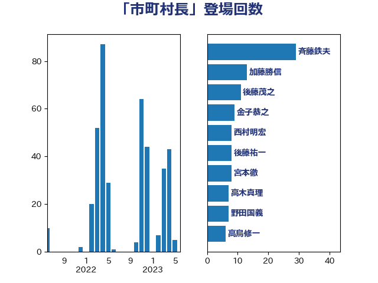

単語「市町村長」

| 斉藤鉄夫 | 公明党 | 29 回 |
| 加藤勝信 | 自由民主党 | 13 回 |
| 後藤茂之 | 自由民主党 | 11 回 |
| 金子恭之 | 自由民主党 | 9 回 |
| 西村明宏 | 自由民主党 | 8 回 |
| 後藤祐一 | 立憲民主党 | 8 回 |
| 宮本徹 | 日本共産党 | 8 回 |
| 高木真理 | 立憲民主党 | 7 回 |
| 野田国義 | 立憲民主党 | 7 回 |
| 高鳥修一 | 自由民主党 | 6 回 |
| 東徹 | 日本維新の会 | 5 回 |
| 新垣邦男 | 立憲民主党 | 5 回 |
| 国定勇人 | 自由民主党 | 5 回 |
| 野村哲郎 | 自由民主党 | 4 回 |
| 角田秀穂 | 公明党 | 4 回 |
| 川田龍平 | 立憲民主党 | 4 回 |
| 吉田久美子 | 公明党 | 4 回 |
| 阿部弘樹 | 日本維新の会 | 3 回 |
| 金城泰邦 | 公明党 | 3 回 |
| 篠原孝 | 立憲民主党 | 3 回 |
| 神谷政幸 | 自由民主党 | 3 回 |
| 浜口誠 | 国民民主党 | 3 回 |
| 高橋千鶴子 | 日本共産党 | 2 回 |
| 谷田川元 | 立憲民主党 | 2 回 |
| 西村康稔 | 自由民主党 | 2 回 |
| 萩生田光一 | 自由民主党 | 2 回 |
| 福島伸享 | 無所属 | 2 回 |
| 石垣のりこ | 立憲民主党 | 2 回 |
| 田畑裕明 | 自由民主党 | 2 回 |
| 田中健 | 国民民主党 | 2 回 |
| 渡辺孝一 | 自由民主党 | 2 回 |
| 森屋隆 | 立憲民主党 | 2 回 |
| 岸田文雄 | 自由民主党 | 2 回 |
| 岡田直樹 | 自由民主党 | 2 回 |
| 山本香苗 | 公明党 | 2 回 |
| 小里泰弘 | 自由民主党 | 2 回 |
| 小川淳也 | 立憲民主党 | 2 回 |
| 小宮山泰子 | 立憲民主党 | 2 回 |
| 塩川鉄也 | 日本共産党 | 2 回 |
| 堀井巌 | 自由民主党 | 2 回 |
| 城井崇 | 立憲民主党 | 2 回 |
| 中根一幸 | 自由民主党 | 2 回 |
| 中川正春 | 立憲民主党 | 2 回 |
| 下野六太 | 公明党 | 2 回 |
| 野田聖子 | 自由民主党 | 1 回 |
| 道下大樹 | 立憲民主党 | 1 回 |
| 足立康史 | 日本維新の会 | 1 回 |
| 西銘恒三郎 | 自由民主党 | 1 回 |
| 葉梨康弘 | 自由民主党 | 1 回 |
| 菅家一郎 | 自由民主党 | 1 回 |
| 米山隆一 | 立憲民主党 | 1 回 |
| 福島みずほ | 社会民主党 | 1 回 |
| 石橋通宏 | 立憲民主党 | 1 回 |
| 石井苗子 | 日本維新の会 | 1 回 |
| 石井正弘 | 自由民主党 | 1 回 |
| 田村貴昭 | 日本共産党 | 1 回 |
| 渡辺博道 | 自由民主党 | 1 回 |
| 浦野靖人 | 日本維新の会 | 1 回 |
| 池下卓 | 日本維新の会 | 1 回 |
| 梶原大介 | 自由民主党 | 1 回 |
| 梅村聡 | 日本維新の会 | 1 回 |
| 柴田巧 | 日本維新の会 | 1 回 |
| 松本剛明 | 自由民主党 | 1 回 |
| 松島みどり | 自由民主党 | 1 回 |
| 新妻秀規 | 公明党 | 1 回 |
| 斎藤嘉隆 | 立憲民主党 | 1 回 |
| 庄子賢一 | 公明党 | 1 回 |
| 市村浩一郎 | 日本維新の会 | 1 回 |
| 島村大 | 自由民主党 | 1 回 |
| 岩谷良平 | 日本維新の会 | 1 回 |
| 山谷えり子 | 自由民主党 | 1 回 |
| 山本佐知子 | 自由民主党 | 1 回 |
| 尾身朝子 | 自由民主党 | 1 回 |
| 小林茂樹 | 自由民主党 | 1 回 |
| 奥下剛光 | 日本維新の会 | 1 回 |
| 太田房江 | 自由民主党 | 1 回 |
| 天畠大輔 | れいわ新選組 | 1 回 |
| 坂本祐之輔 | 立憲民主党 | 1 回 |
| 嘉田由紀子 | 無所属 | 1 回 |
| 倉林明子 | 日本共産党 | 1 回 |
| 中村裕之 | 自由民主党 | 1 回 |
| 中島克仁 | 立憲民主党 | 1 回 |
| 中山展宏 | 自由民主党 | 1 回 |
| 三浦信祐 | 公明党 | 1 回 |
| 三ッ林裕巳 | 自由民主党 | 1 回 |
| たがや亮 | れいわ新選組 | 1 回 |
| こやり隆史 | 自由民主党 | 1 回 |